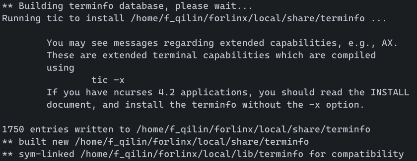
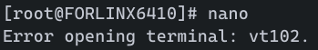
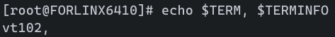

交叉编译GNU nano并在开发板终端运行
旧文档翻新：写于2021-08-06。
GNU nano是一个体积小巧而功能强大的文本编辑器。其特点之一为可以直接在终端运行，不需要GUI界面。相比于vim，其对新手较为友好。
编译ncurses依赖
下载源码包(当前版本为6.2)，解压并跳转到源码目录：
1 | |
确认交叉编译器所在目录和安装目录，然后进行配置：
- 这里所用编译器
arm-none-linux-gnueabi-*位置在环境变量中，可直接输入到host参数。 - 安装目录在这里选择
/home/f_qilin/forlinx/local输入到prefix参数，一般情况下为/usr/local，但在安装时需要root权限。 - 参数：
--prefix=PREFIX：安装目录，一般为/usr/local。--host=HOST：交叉编译器前缀，这里选择arm-none-linux-gnueabi。- 剩下的输
./configure --help查看。
1 | |


注：
- 注意ncurses版本，如果需要5.x等版本请进行相关配置或者下载5.x源码。
- 在实际运行时可能会出现“Error opening terminal: xxx.”的错误，详见“指定TERMINFO”部分。
编译nano
在编译之前，需要创建一个curses.h的链接，否则会出错：
1 | |
其余流程同上(当前版本为5.8)：
1 | |
注：
- 如果遇到编译错误，请查看错误信息，然后重新配置。
至此，编译工作全部完成，接下来需要将输出文件转移到开发板中。
转移到开发板
在转移之前，请将输出文件所在目录挂载到开发板中。具体过程不再赘述。
假设/home/f_qilin/forlinx被挂载到/mnt/forlinx。
以下过程在开发板终端操作：
1 | |
注：
- 可能需要花费较长时间，请耐心等待。
- 编译出的文件一般为主机用户所有，保险起见，复制时保留权限但不保留所有者信息。
- 也可以整合进rootfs然后烧写到开发板，请参考其他教程。复制文件的操作是完全一致的。
完成后，输入nano命令即可运行。

指定TERMINFO
如果出现以下情况：

检查TERM以及TERMINFO：
1 | |

进行测试：
1 | |
正常运行。可见，缺少TERMINFO变量，需要进行配置。
根据以上结果，只需要配置环境信息即可：
1 | |
交叉编译GNU nano并在开发板终端运行
https://fqilin.top/blog/cross-compile-nano/